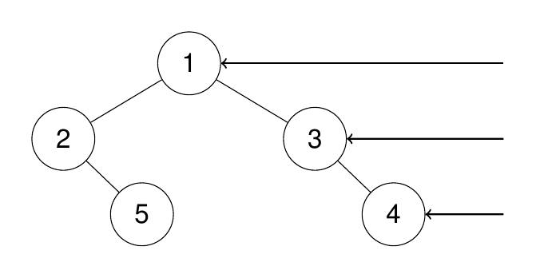
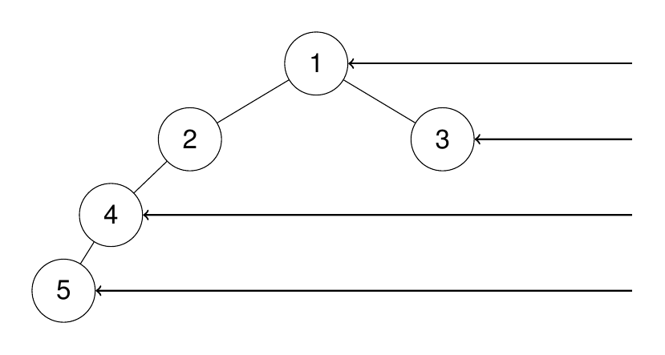

199. 二叉树的右视图
题目与约束
给定一个二叉树的 根节点 root，想象自己站在它的右侧，按照从顶部到底部的顺序，返回从右侧所能看到的节点值。
示例 1：
输入：root = [1,2,3,null,5,null,4] 输出：[1,3,4] 解释：

示例 2：
输入：root = [1,2,3,4,null,null,null,5] 输出：[1,3,4,5] 解释：

示例 3：
输入：root = [1,null,3] 输出：[1,3]
示例 4：
输入：root = [] 输出：[]
提示:
- 二叉树的节点个数的范围是
[0,100] -100 <= Node.val <= 100
Java 完整推导
Java 核心不变量
每一层只记录最后访问或最先访问的右侧节点。
完整推导
思路推导
-
直觉与致命陷阱（右侧盲区）：
直觉：只管遍历右节点。
陷阱：假设树是这样的：根是 1，左孩子是 2，右孩子是空。2 的左孩子是 4。
如果你站在这棵树的右边，你能看到什么？你能直接透过空荡荡的右边，看到左侧的 1、2、4！所以，“右视图”绝对不等于“所有的右孩子”！
-
破局思路 A（层序遍历 BFS，最稳妥的保底解法）：
既然是“从上到下”看，这就完美契合了层序遍历的逻辑。
每一层有那么多节点，我站在右边，肯定只能看到这一层最右边的那一个（也就是队列里最后一个出队的节点），它把前面的兄弟全挡住了！
- 用队列一层一层地遍历。
- 在每层循环处理时，如果是当前层的最后一个节点（即
i == levelSize - 1），就把它塞进最终的结果列表里。
-
破局思路 B（深度优先 DFS，进阶的优化思路）：
层序遍历要维护队列，代码稍微有点多。有没有办法用递归瞬间秒杀？
有！我们平时做 DFS（前序遍历）是“中 -> 左 -> 右”。
如果我们把顺序反过来，变成“中 -> 右 -> 左”呢？ 这种神奇的遍历顺序保证了：我们在向下遍历每一层时，永远是优先访问该层最右侧的节点！ 我们只需要拿一个本子（记录当前的层数/深度），每次到达一个新深度时，遇到的第一个节点，绝对就是这一层最右边的节点！
Java 实现（DFS 优化思路版）
(在面试中写出 BFS 能及格，但写出下面这个 DFS 绝对能让面试官眼前一亮)
import java.util.ArrayList;
import java.util.List;
/**
* Definition for a binary tree node.
* public class TreeNode {
* int val;
* TreeNode left;
* TreeNode right;
* TreeNode() {}
* TreeNode(int val) { this.val = val; }
* TreeNode(int val, TreeNode left, TreeNode right) {
* this.val = val;
* this.left = left;
* this.right = right;
* }
* }
*/
class Solution {
// 结果集
List<Integer> res = new ArrayList<>();
public List<Integer> rightSideView(TreeNode root) {
// 从根节点开始，根节点的深度定义为 0
dfs(root, 0);
return res;
}
private void dfs(TreeNode node, int depth) {
// 终止条件：走到空节点了
if (node == null) {
return;
}
// 🌟 核心魔法：判断当前节点是否是该层被访问的“第一人”
// 因为我们是“中->右->左”遍历，如果当前深度 depth 等于结果集的大小，
// 说明这一层还没有任何人被加进结果集，当前节点就是这一层最右边的节点！
if (depth == res.size()) {
res.add(node.val);
}
// 优先遍历右子树（让右边的节点先占领结果集）
dfs(node.right, depth + 1);
// 然后再遍历左子树（左边的节点即使到了同一层，因为深度已经等于 res.size()，就加不进去了，完美模拟了“被遮挡”）
dfs(node.left, depth + 1);
}
}
复杂度
- 时间复杂度：O(N)。每个节点仅仅被访问了一次。
- 空间复杂度：O(H)。H 是树的高度。空间消耗来自于递归的系统调用栈。相比于 BFS（最坏情况下队列需要存储 N/2 个节点），DFS 的空间复杂度在树比较宽泛时表现更优秀。
- 逻辑校验：“遮挡效应”是如何在代码里体现的？
- 看上面的 DFS 代码，假设深度为 2 的那一层，有右节点
A和左节点B。 - 程序会先跑到
A那里。此时depth == 2，且res.size() == 2（因为前面 0 层和 1 层各塞了一个），于是A被成功塞进res。此时res.size()变成了 3。 - 等程序回溯再去遍历左侧的
B时，depth依然是 2，但此时res.size()已经是 3 了！2 == 3为假，所以B不会被加入。这就完美地在逻辑上实现了“右节点遮挡左节点”！
Python 完整推导
右视图是“每层最后被看见的人”
如果只走右孩子会漏节点。假设根 1 的右孩子为空，左孩子 2 下面还有 4；从右侧看，1 后面仍然能看见 2 和 4。因此正确对象是每一层最右侧的那个节点。
分层 BFS 把同一层从左到右排好。若用 index == level_size - 1 判断，当前层最后一个出队节点就是右视图中的值；其他节点被它挡住。
用 [1,2,3,None,5,None,4] 走一遍
- 第一层队列只有 1，
index = 0也是最后一项，记录 1；加入孩子 2、3，队列成为[2,3]。 - 第二层
level_size = 2。先弹出 2，不是最后一项；它把 5 加入队尾。再弹出 3，记录 3；3 的右孩子 4 入队。 - 第三层只有 4，记录 4。最终答案是
[1,3,4]。
第二层中的 3 比 2 更靠右，所以被看见；到了第三层，3 右侧没有孩子，4 从左边露出来。这正是右视图会随着层的形状变化、不能只依赖 right 的原因。
如果树只有左链，每一层只有一个节点，答案就是整条链的值；如果根只有右孩子，第二层从右侧看到的是这个右节点。两种形状都不需要改变 BFS 模板，判断仍只看本层最后一项，不能提前跳到最右下角。空位不会进入队列，但对应层的其他节点仍按原顺序处理，层末判断也不会改变；每一层都恰好记录一个可见值。
Python 实现
参考来源：经典解法实现
沿用项目旧 Python 的 BFS 每层最后节点方案，并整理旧摘录中容易误解的层末判断；算法属于原收录经典 BFS 实现。
from collections import deque
from typing import List, Optional
class Solution:
def rightSideView(self, root: Optional[TreeNode]) -> List[int]:
if root is None:
return []
answer = []
queue = deque([root])
while queue:
level_size = len(queue)
for index in range(level_size):
node = queue.popleft()
if index == level_size - 1:
answer.append(node.val)
if node.left is not None:
queue.append(node.left)
if node.right is not None:
queue.append(node.right)
return answer
固定层长度的作用
level_size 在当前层开始前固定，所以即使代码把下一层孩子加入队列，range(level_size) 也不会多处理它们。popleft() 保证左侧节点先出、右侧节点后出。
空树没有层，返回空列表；只有左链时，每一层唯一的节点仍然是该层最右可见节点。
复杂度
- 时间复杂度：
O(n)。 - 空间复杂度：
O(w)。
每个节点入队、出队一次，时间 O(n)；队列最大保存一层宽度 w，空间 O(w)。
力扣原题
C++ 实现
实现来源：经典解法实现
- BFS 层序遍历，每层从左到右入队
- 每层最后一个出队的节点就是右视图答案
- 队内子节点继续扩展下一层
class Solution {
public:
vector<int> rightSideView(TreeNode* root) {
vector<int> right;
if (!root) return right;
queue<TreeNode*> q; q.push(root);
while (!q.empty()) {
int n = q.size();
for (int i = 0; i < n; i++) {
TreeNode* cur = q.front(); q.pop();
if (i == n - 1) right.push_back(cur->val); // 本层最后一个
if (cur->left) q.push(cur->left);
if (cur->right) q.push(cur->right);
}
}
return right;
}
};
Go 实现
实现来源：经典解法实现
- BFS 层序遍历，每层从左到右入队
- 每层最后一个出队的节点就是右视图答案
- 队内子节点继续扩展下一层
func rightSideView(root *TreeNode) []int {
right := []int{}
if root == nil { return right }
queue := []*TreeNode{root}
for len(queue) > 0 {
n := len(queue)
for i := 0; i < n; i++ {
cur := queue[0]
queue = queue[1:]
if i == n-1 { right = append(right, cur.Val) }
if cur.Left != nil { queue = append(queue, cur.Left) }
if cur.Right != nil { queue = append(queue, cur.Right) }
}
}
return right
}
C 实现
实现来源：经典解法实现
- BFS 层序遍历，每层从左到右入队
- 每层最后一个出队的节点就是右视图答案
- 队内子节点继续扩展下一层
int* rightSideView(struct TreeNode* root, int* returnSize) {
*returnSize = 0;
if (!root) return NULL;
int* right = malloc(sizeof(int) * 128);
struct TreeNode* queue[256]; int head = 0, tail = 0;
queue[tail++] = root;
while (head < tail) {
int n = tail - head;
for (int i = 0; i < n; i++) {
struct TreeNode* cur = queue[head++];
if (i == n - 1) right[(*returnSize)++] = cur->val;
if (cur->left) queue[tail++] = cur->left;
if (cur->right) queue[tail++] = cur->right;
}
}
return right;
}